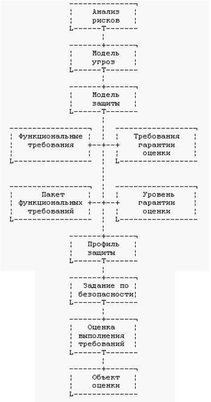
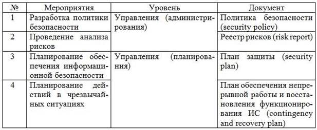
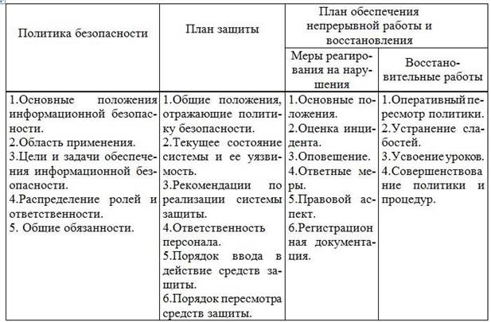

Задача построения интегрированной системы безопасности КСУЗ в общем случае включает 3 уровня:
1. Определение законодательно-правовой базы;
2. Разработку организационных документов, мер и процедур;
3. Разработку, внедрение, сопровождение подсистем и средств защиты информационно-программных ресурсов.
3.1. Определение законодательно-правовой базы
Пакет правовых документов в области ИБ, главным образом, включает: Уголовный кодекс РФ, Гражданский кодекс РФ, ФЗ «О правовой охране программ для электронных вычислительных машин и баз данных», ФЗ «О сертификации продуктов и услуг», ФЗ "О Государственной тайне", ФЗ "Об информации, информатизации и защите информации", ФЗ "Об электронной цифровой подписи", Указ
Президента РФ "Об утверждении перечня сведений конфиденциального характера". В целом законодательная база учебной деятельности касается определения необходимости лицензий на деятельность в сфере ИБ, использования сертифицированных средств, соблюдения соответствующих требований УК РФ и ФЗ РФ. Следует заметить, что в связи с реформой системы лицензирования несколько упрощены требования некоторым видам деятельности и услугам в области ИБ.
К нормативным документам в области ИБ относят РД
Гостехкомиссии РФ и следующие стандарты:
– ГОСТ 28147-89. Системы обработки информации. Защита криптографическая. Алгоритм криптографического преобразования;
– ГОСТ 45.127-99. Система обеспечения информационной безопасности Взаимоувязанной сети связи РФ. Термины и определения;
– ГОСТ 51583-2000. Порядок создания АС в защищенном исполнении. Общие положения;
– ГОСТ Р 34.10–94. ИТ. Криптографическая защита информации.Процедуры выработки и проверки электронной подписи на базе асимметричного криптографического алгоритма;
– ГОСТ Р 34.11–94. ИТ. Криптографическая защита информации.
Функция хэширования;
– ГОСТ Р 50739-95. СВТ. Защита от НСД к информации;
– ГОСТ Р 50922-96. ЗИ. Основные термины и определения; – ГОСТ Р 51188-98. Испытания ПС на наличие компьютерных вирусов;
– ГОСТ Р 51275-99 ЗИ. Объект информатизации. Факторы, воздействующие на информацию;
– ГОСТ Р 51624-00. ЗИ. АС в защищенном исполнении. Общие требования;
– ГОСТ Р ИСО/МЭК 15409-2001. Методы и средства обеспечениябезопасности. Критерии оценки безопасности ИТ;
– ГОСТ Р ИСО 7498-2-99. ИТ. ВОС. Базовая эталонная модель. Часть 2. Архитектура защиты информации;
– ГОСТ Р ИСО/МЭК 9594-8-98. ИТ. ВОС. Справочник. Часть 8.
Основы аутентификации;
– ГОСТ Р ИСО/МЭК 9594-9-95. ИТ. ВОС. Справочник. Часть 9.Дублирование. ГОСТ Р ИСО/МЭК 15408-2001. Методы и средства обеспечения безопасности. Критерии оценки безопасности ИТ.
Особое внимание представляет международный ГОСТ 15408, планируемый на смену РД Гостехкомиссии РФ. ГОСТ 15408 предназначен для анализа и оценки безопасности и качества ИТ и СЗИ. ГОСТ определяет типовые требования к функциям безопасности (девять классов, 76 семейств, 184 компонента и 380 элементов), требования доверия безопасности – семь классов, 25 семейств, 72 компонента, и 9 уровней гарантии. Типовой алгоритм оценки ИБ по ГОСТу представлен на рис. 1.
3.2. Организационные меры
Организационные меры в общем случае включают:
1. Проведение аудита ИБ КСУЗ и экспертиза вуза по требованиямбезопасности;
2. Определение политики и процедур безопасности;
3. Рекомендации по настройке сетей и систем.
Организационно-техническими документами здесь являются: – стандарт ISO 17799 (BS 7799) по аудиту информационной безопасности и частично стандарты РФ по аккредитации, ИБ, качеству;
– политика (положение) безопасности, реестр анализа риска, планы защиты и восстановления;
– руководства по настройке, детальные инструкции, как-то: Stepbystep (cert.org), инструкции Stiv Substen (www.trustedsystem.com) и др.

Рис. 1. Типовой алгоритм оценки ИБ
В первой части документов особо выделяют международный стандарт ISO 17799, к сожалению не имеющего аналога в РФ. Указанный стандарт определяет типовые решения по: классификации и управлению ресурсами, безопасности персонала (в т. ч. обучению), физической безопасности, управлению коммуникациями и процессами, контролю доступа, разработке и технической поддержке вычислительных систем, управлению непрерывностью бизнеса, соответствию системы основным требованиям нормативных документов.
Таблица 1. Разработка политики безопасности

Наиболее применительным является подход, определенный в ISO 17799 – CRAMM. Данный подход включает: определение ценности ресурсов (1-10 баллов), оценка угроз (36 классов), уязвимостей, уровней риска (1–5, 1–3, 1–7 баллов), Поиск адекватных контрмер, рекомендаций и примеров (300, 1000, 900).
Таблица 2.
Основные документы

В основе планов по ИБ лежат описание процедур безопасности: проверка системы и средств безопасности, управление паролями, управление счетами, поддержка пользователей, сопровождение программного обеспечения, конфигурационное управление, резервное копирование, управление носителями, документирование.
3.3. Технические вопросы
При решении технических вопросов принято разделять систему безопасности КСУЗ на подсистемы. Это связано с классами актуальных угроз, сложившийся рынок средств и технологий ИБ и требования нормативных документов – Руководящих документов Гостехкомиссии РФ по защите информации от НСД АС, СВТ, МЭ и ГОСТ Р ИСО/МЭК 15408 (ИТ. Методы и средства ОБИ. Критерии оценки безопасности ИТ).
Выделяют основные подсистемы, криптографические, защиты распределенных ресурсов, а также защиты инфраструктуры. Основными подсистемам являются:
1. Идентификация и аутентификация;
2. Разграничение доступа;
3. Протоколирование и аудит;
4. Обеспечение целостности данных;
5. Защита от разрушающих программных средств.
Криптографические подсистемы разделяют на:
6. Шифрование;
7. Обеспечения целостности данных;
8. Криптографическая аутентификация и инфраструктура;Подсистемы безопасности распределенных систем:
9. Межсетевое экранирование;
10. Виртуальные частные сети;
11. Анализ защищенности;
12. Предупреждение об НСД.
Безопасность инфраструктуры и физическая безопасность:
13. Защита от несанкционированного копирования программ;
14. Гарантированное хранение и восстановление данных;
15. Безопасность электропитания;
16. Безопасность кабельной системы и др.
Отметим принципиальные особенности указанных подсистем.
Подсистема идентификации и аутентификации предназначена для именования ресурсов и проверки подлинности субъектов сети. Около 80 % инцидентов в сети связано с уязвимостью указанной подсистемы. В настоящее время подсистему подразделяют на одноразовые/ многоразовые параольные системы, системы, основанные на использовании уникальных устройств (карточек), биометрические устройства.
Основной подсистемой ИБ принято считать систему разграничения доступом. В настоящее время выделяют дискретный и мандатный принципы разграничения доступом, как основные, и различные их расширения: изолированная программная среда, контроль потоков, ролевое управление и др. Следует помнить, что в сетях, обрабатывающих информацию, составляющую гостайну, должен быть реализован мандатный принцип разграничения доступом.
Подсистема протоколирования является важнейшей в КСУЗ. Помимо технического предназначения, она представляет моральное ограничение – нарушители должны знать, что их действия будут зафиксированы. Выделяют встроенные системы протоколирования, системы аудита и активного аудита.
Основной системой обеспечения управления доступом на уровне сети является подсистема межсетевого экранирования. Принципиальным компонентом защиты АРМ является сочетание персонального МЭ с антивирусными средствами и средствами контроля целостности.
Среди антивирусных средств и средств контроля целостности традиционно выделяют продукты Лаб. Каперского и ДиалогНауки, считающимися одними из лучших в мире (в классе АРМ.ЛВС).
Одной из актуальных подсистем ИБ выделяют подсистему отслеживания уязвимостей (bug-tracking). Как указывалось, подавляющее большинство атак основаны на опубликованных уязвимостях. Учитывая любознательность современных учащихся, указанная подсистема безопасности является одной из решающих в обеспечении ИБ КСУЗ. В настоящее время выделяется общедоступных БД по уязвимостям:
– Common Vulnerabilities & Exposures dictionary (cve.mitre.org/cve)
– CERT Vulnerability Notes Database (cert.org)
– SecurityFocus (securityfocus.com)
– ISS X-Force Threat and Vulnerability Database (iis.net/force)
– Computer Incident Advisor Capability (cias.com)– Microsoft
– SecurityLab (РФ).
Принципиальной особенность вузовской сети должно быть наличие средств анализа защищенности и обнаружения атак. К сожалению, коммерческие продукты порою недоступны для закупки вузами. Поэтому, для построения безопасной КСУЗ приходится использовать бесплатные или условно бесплатные версии.
Кроме названных подсистем, в вузовских сетях отдельно выделяют задачи защиты отдельных сервисов. К таким сервисам, видимо можно отнести, защиту эл. почты, web-серверов, дистанционных курсов.
При организации дистанционного обучения в сети Интернет могут быть реализованы подсистемы VPN и, в перспективе, PKI.
Одним из новых подсистем ИБ относят системы эмулирование (Honey pot), включающие мониторы портов (Port monitors), эмуляторы служб (Deception systems), эмуляторы систем (Full systems).